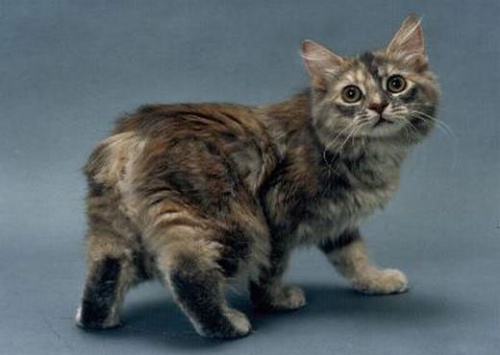

Manx
A manx cica Angliából, Man kikötővárosból származik, és legjellegzetesebb tulajdonsága, hogy vagy nincs farka, vagy csonkolva van. Bár a génállományuknak köszönhetően az is előfordul, hogy teljes hosszúságú farokkal születik a kiscica. Őket azonban nem szívesen látják a versenyeken - talán mert azt gondolják, hogy az egyszerű házicicát próbálják egy farokhossznyi előnyhöz juttatni gazdáik.
A manx zömök, kerekded cicus, aki szeret magasra ugrani, szorosan kötődik a gazdájához, és olyan tulajdonságai is vannak, mint a kutyáknak - például elássa a játékait.